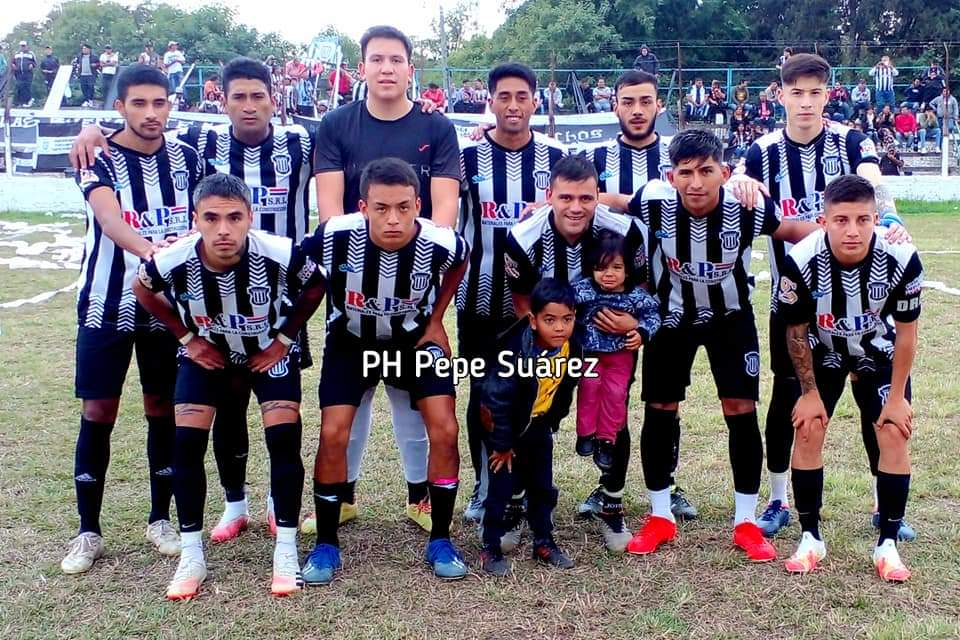

Centro Social, Cultural y Atlético General Guemes
(1.916-2016) 100 Años de Gloria El Centro Social, Cultural y Atlético General Guemes, fue fundado el 16 de Junio de 1916, es la Institución decana de Rosario de la Frontera, siendo su primer Presidente el señor Servando Leal, padre del teniente General Jorge Edgard Leal, esta institución nació con sólidos e irrefutables fundamentos que tuvo que ver con la intención y decisión de un grupo de vecinos inspirados en una loable iniciativa. * También se destacaron como dirigentes los señores: Roque Lazarte, Félix Cantón, Manuel Teseyra, Juan Felipe Ponce, Manuel Rivella, Andrés Díaz, Juan Carlos Zarzuri, Luis Suárez, Lorenzo Guitian, Daniel Porcelo, Ramón, Arnaldo Felipe, Juan Carlos y Pedro Ernesto Figueroa, entre otros
